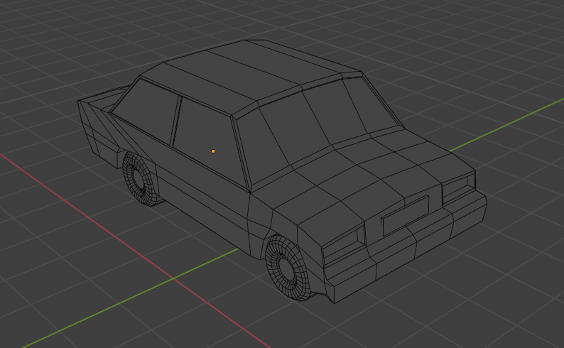
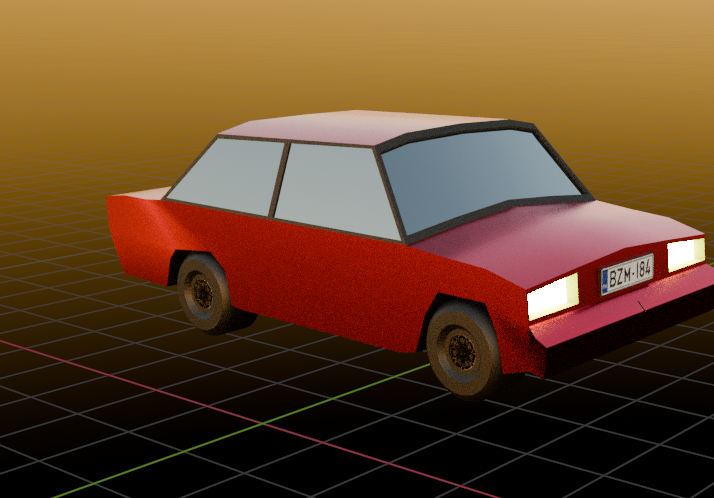

Overview Car Design

This project is based on UV Mapping and color texturing. In this, the UV map is later given a layout in Photoshop.

UV Mapping
Firstly, the project is processed through UV mapping for a perfect design structure containing the body of the car and the wheels.

Car Modeling
The car is later modeled using the texture required for a perfect look. The parts are joined together, and the light and camera angle are projected for the perfect viewing of the car.

Rendering
Finally, the car design is rendered to achieve a realistic appearance. This step includes adjusting lighting, shadows, and reflections to enhance the visual quality.
My Social Media